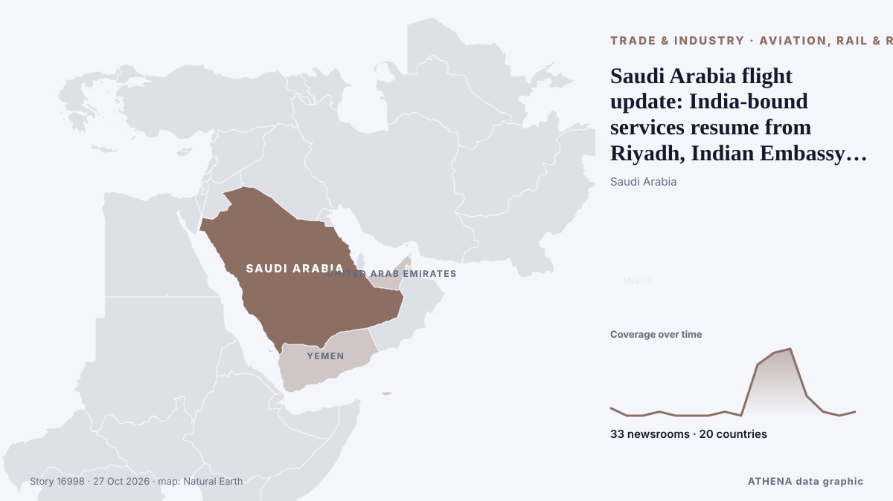

Νότια Ασία
Νότια Ασία: τα πιο πρόσφατα γεγονότα ανά χώρα, με κίνδυνο, πηγές και χώρες από το ATHENA.

Εμπόριο & ΒιομηχανίαSaudi Arabia flight update: India-bound services resume from Riyadh, Indian Embassy says
Riyadh went quiet, but Saudi airspace didn't: where flights went after the airport attacks. από Simple Flying
Tiger Shroff Firing Case Updates: 3 Suspects Undergo Medical Examination In Kota, Transit Remand Granted
Tiger Shroff Firing Case Updates: Tiger Shroff sustained injuries on his shoulder, chest and his right arm. από NDTV
France intercepts Russian ‘shadow fleet’ tanker in operation off Réunion Island
France’s navy has boarded an oil tanker suspected of helping Russia evade Western sanctions in an operation hundreds of kilometres south of the French Indian Ocean territory of Réunion Island. από RFI English
India helicopter crash in Himalayas kills 6
Police said efforts were under way to recover the bodies from the remote crash site, while the cause of the accident remained unknown. από Free Malaysia Today
UN Refugee Agency Says 9 Million Need Extra Winter Help
The UN refugee agency highlights the need for extra winter assistance for nine million people across Ukraine, Syria, Lebanon, and Afghanistan, seeking $50 million in donations. από Arab News
Ambani, Adani outlets among Indian publishers contesting Modi’s privacy law
The October 6 lawsuit is the most high-profile challenge to Modi’s privacy law. από Express Tribune
Saudi, Pakistani and Turkish Officials to Hold Security Talks with Iran in Tehran
TEHRAN, October 26: Saudi Arabia’s Defence Minister Prince Khalid bin Salman bin Abdulaziz Al Saud is leading a Saudi delegation to Tehran for high-level discussions with Iranian o... από Arab Times